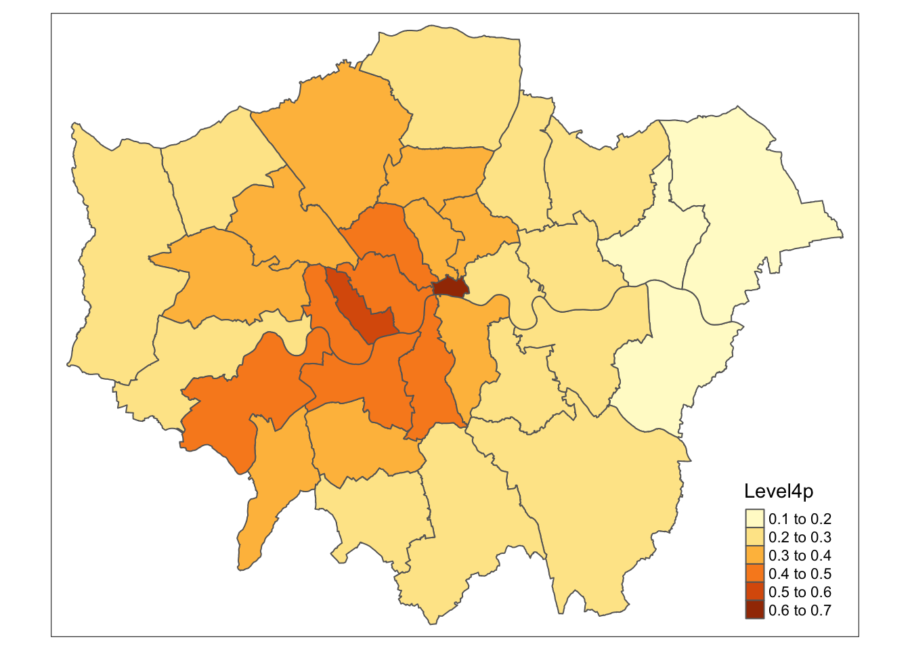
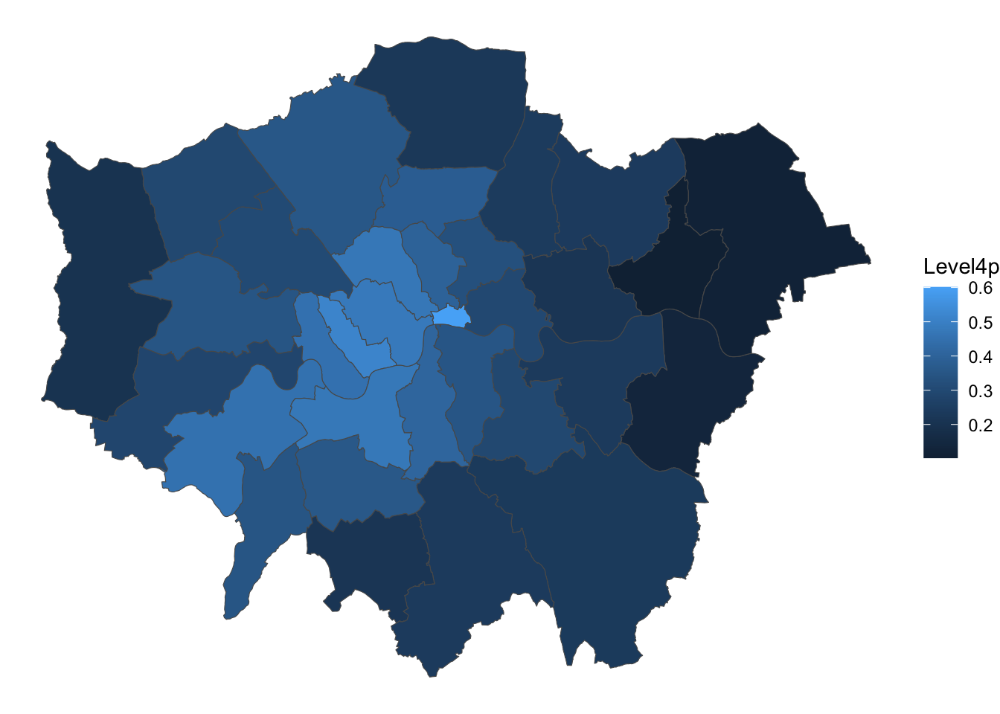
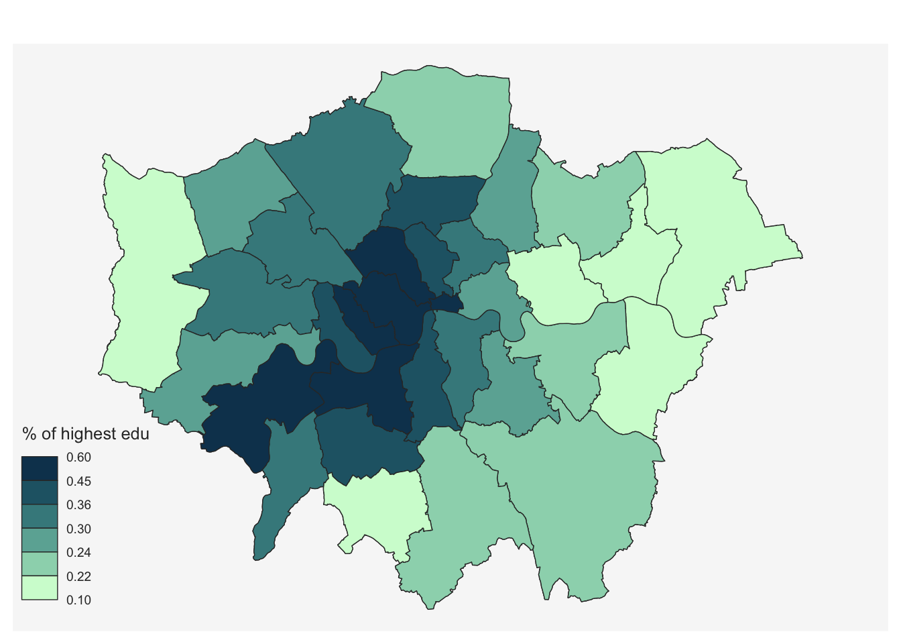

# Load the 'sf' library, which stands for Simple Features, used for working with spatial data.
library(sf)
# Load the 'tidyverse' library, a collection of packages for data manipulation and visualization.
library(tidyverse)
# Load the 'tmap' library, which is used for creating thematic maps and visualizing spatial data.
library(tmap)
# The 'readr' library provides a fast and user-friendly way to read data from common formats like CSV.
library(readr)
# Converts Between GeoJSON and simple feature objects
library(geojsonsf)
# Using data from OpenStreetMap (OSM)
library(osmdata)Lab
districts <- read_sf("data/London/Polygons/districts.shp")
# import qualifications data from csv
qualifications2001_df <- read.csv("data/London/Tables/qualifications2001_2.csv")
districts_tidy <- districts %>%
left_join(qualifications2001_df, by=c("DIST_CODE"="Zone_Code")) %>%
mutate(Level4p = Level4/Population1674)And finally, we can map the results! We will be using both the tmap (specific for maps, see here), the ggplot2 (for general data visualisations, see here and the mapsf (for thematic cartography, see here) packages:
#3a. plot the new variable using the tmap package
if(!require("tmap")) install.packages("tmap")
library("tmap")
qtm(districts_tidy, "Level4p") # Quick thematic map plot
#3b. Use ggplot to create the same map of London
if(!require("ggplot2")) install.packages("ggplot2")
library("ggplot2")
ggplot() +
geom_sf(data = districts_tidy, aes(fill = Level4p)) +
theme_void() 
#3c. Use mapsf to create the same map of London
if(!require("mapsf")) install.packages("mapsf")Loading required package: mapsflibrary("mapsf")
# Plot the base map
mf_map(x = districts_tidy)
# Plot with the data
mf_map(x = districts_tidy, var = "Level4p", type = "choro",
pal = "Dark Mint",
breaks = "quantile",
nbreaks = 6,
leg_title = "% of highest edu",
add = TRUE)